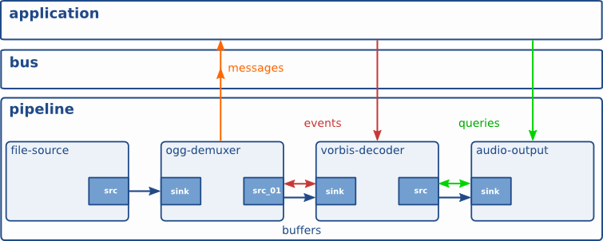

GStreamer 基本概念
什么是 Element？
GStreamer应用中最重要的对象是GstElement对象，element是多媒体pipeline基本的构建元素，所有的高级元素都集成自GstElement。
Gstreamer中主要有三种elements: sink element，src element，filter-like element，element的类型由其具备哪些pads决定
元素(element)是GStreamer中最重要的概念。可以通过创建一系列的元素, 并把它们连接起来, 从而让 数据流在这个被连接的各个元素之间传输。
每个元素都有一个特殊的函数接口,对于有些元素的函数接口它们是用于能够读取文件的数据,译码文件数据的。而有些元素的函数接口只是输出相应的数据到具体的设备上(例如,声卡设备)。
可以将若干个元素连接在一起,从而创建一个管道来完成一个特殊的任务,例如,媒体播放或者录音。GStreamer已经默认安装了很多有用的元素 ,通过使用这些元素(Elements)你能够构建一个具有多种功能的应用程序。
什么 bin ？
GstBin可以将一系列elements组合形成一个逻辑上的element，以便从整体上操控和管理elements。
也就是说 Bin是一个可以启动的element的集合，包含source、filter和sink。
GstBin 是元素集合的容器。 由于 bin 是元素本身的子类，因此您几乎可以像控制元素一样控制 bin，从而为应用程序抽象出很多复杂性。
例如，您可以通过更改 bin 本身的状态来更改 bin 中所有元素的状态。 Bins 还转发来自其包含的子项的总线消息（例如错误消息、标签消息或 EOS 消息）。
什么是 pipeline
管道是一个顶级容器。 它为应用程序提供总线并管理其子级的同步。 当您将其设置为“暂停”或“播放”状态时，数据流将开始并进行媒体处理。 一旦启动，管道将在单独的线程中运行，直到您停止它们或到达数据流的末尾。
最外层的 bin 即使pipeline。管道 pipeline 由元素 (elements) 和链接 (links) 组成。
Elements 可以放入不同种类的容器 (Bin) 中。 元素elements、链接links和容器Bin可以在管道描述中以任意顺序指定。

什么是 Bus
GstBus 是将stream线程消息转发给应用程序线程的系统。
GstBus 本身运行在应用程序的上下文中，但能够自动监听GStreamer内的线程。 每条 pipeline 都自带一条 GstBus，开发人员仅需为其设定handler以便在接收到消息是能或者正确的处理。
什么是Pad?
Pad 的定义
Pad 是元素的输入和输出，可以在其中连接其他元素。 它们用于协商 GStreamer 中元素之间的链接和数据流。
Pad 可以被视为元素上的“插头”或“端口”，其中可以与其他元素建立链接，并且数据可以通过它流入或流出这些元素。
它是一个element与外部交互的接口，数据从一个element的src-pad传递给另一个element的sink-pad。Pad的 Capabilities 表明element能处理的数据。
Pad 的功能
Pads 在GStreamer中被用于多个元素的链接，从而让数据流能在这样的链接中流动。链接成功的条件是: 只有在两个 Pads 允许通过的数据类型一致的时候才被建立。
一个 Pad 可以被看作是一个元素(element)插座或者端口，元素(element)之间的链接就是依靠着 Pad 。
Pad 具有特定的数据处理功能: Pad 可以限制流经它的数据类型。 仅当两个 Pad 允许的数据类型（功能）兼容时，才允许两个 Pad 之间存在链接。 数据类型在 pad 之间使用称为 caps 协商的过程进行协商。 数据类型由 GstCaps 描述。
在这里做一个类比可能会有所帮助。 Pad 似于物理设备上的插头 (src pad)或插孔 (sink pad)。 例如，考虑一个由音频放大器、DVD 播放器和（静音）视频投影仪组成的家庭影院系统。 允许将 DVD 播放器连接到放大器，因为这两个设备都有音频插孔，并且允许将投影仪连接到 DVD 播放器，因为这两个设备都有兼容的视频插孔。 由于投影仪和放大器具有不同类型的插孔，因此投影仪和放大器之间可能无法建立链接。 GStreamer 中的 sink pad 与家庭影院系统中的插孔具有相同的用途。
大多数情况下，GStreamer 中的所有数据都通过元素之间的链接以一种方式流动。 数据通过一个或多个源 Pad 流出一个元件，并且元件通过一个或多个接收 Pad 接受传入数据。 源元件和汇元件分别仅具有源 Pad 和汇 Pad 。 数据通常意味着缓冲区（由 GstBuffer 对象描述）和事件（由 GstEvent 对象描述）。
什么是Capabilities？
Capabilities是用于描述一个pad能够处理或正在处理的数据类型的机制。GStreamer使用GstCaps描述pads的capabilities，一个GstCaps将含有一个或多个GStructure来描述媒体类型，但对于已经完成negotiation的pad，其GstCaps的GStructure是唯一的，并且属性值是固定的
通信
GStreamer 提供了多种用于应用程序和管道之间的通信和数据交换的机制。
buffers 缓冲区是用于在管道中的元素之间传递流数据的对象。 缓冲区始终从 source 流向 sink（downstram）。
events 事件是在元素之间或从应用程序到元素发送的对象。 事件可以向上游和下游传播。 下游事件可以同步到数据流。
messages 消息是由管道 pipeline 消息总线 bus 上的元素发布的对象，它们将被保留以供应用程序收集。 消息可以从发布消息的元素的流线程上下文同步拦截，但通常由应用程序从应用程序的主线程异步处理。 消息用于以线程安全的方式将错误 errors、标签 tags、状态更改 state changed、缓冲状态 buffering state、重定向 redirects 等信息从元素传输到应用程序。
queries 查询允许应用程序从管道请求信息，例如持续时间或当前播放位置。 查询始终得到同步答复。 元素还可以使用查询从其对等元素请求信息（例如文件大小或持续时间）。 它们可以在管道中以两种方式使用，但上游查询更常见。
